Kevin Chu · Fall 2026
Image Warping and Mosaicing
One photo can only fit so much of a scene. For this project I took overlapping photos around campus and joined them into larger images called mosaics. The challenge is that turning the camera changes how the scene looks, so I can't just place the photos next to each other. I first find how matching features move between photos, reshape the images until those features line up, and blend the overlap to hide the seams.
Part A
Image Warping and Mosaicing
Shoot the Pictures
To join two photos, they need to overlap, meaning part of the scene shows up in both so I can use it to line them up. I kept the phone in the same spot and only turned it between shots. That matters because if the camera moves sideways, nearby objects shift more than faraway ones, and then no single transform can line both of them up. I also took each set quickly so people and lighting wouldn't change much in between. At Haas Pavilion and on Memorial Glade facing Doe Library I turned from left to right, and in the eucalyptus grove I tilted upward, so those photos go from the ground up to the treetops.
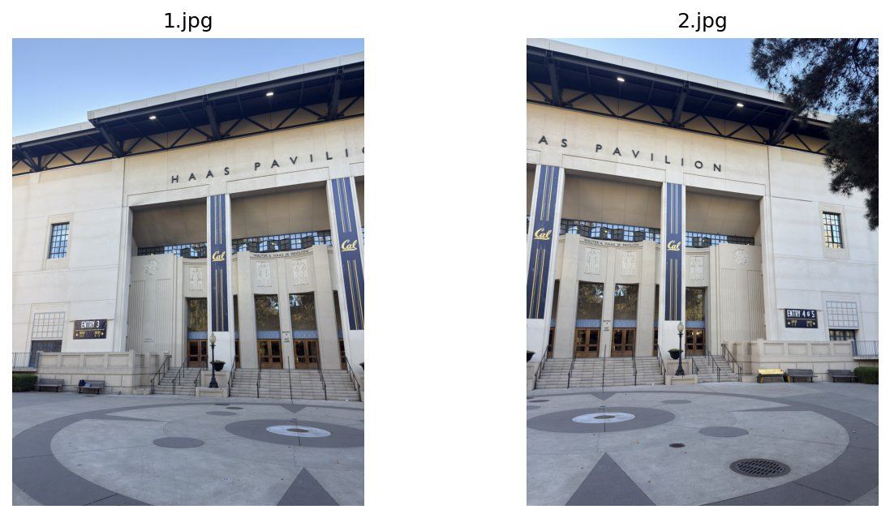
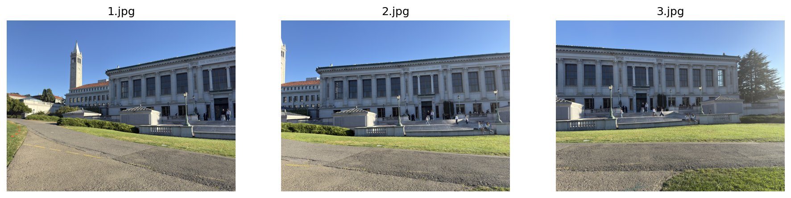
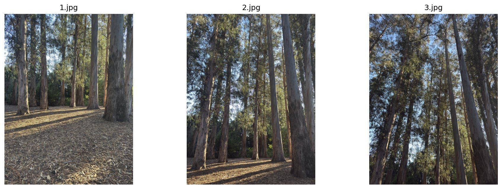
Recover Homographies
The first step is to describe where a feature in one photo should land in the next. For example, a window corner might appear near the right edge of the left photo and near the left edge of the next photo. Those two locations are a matching pair, also called a correspondence. I record each location as pixel coordinates (x, y), with x increasing to the right and y increasing downward.
Now I want one transform that moves every point in one photo onto its match in the other. Because the camera only turned, a projective transform, also called a homography, can do this. It's a 3×3 matrix H, which I solve for using the matching points.
A.2 Setting up the equations
To apply H to a point (x, y), I first write the point in homogeneous coordinates by adding a 1, giving (x, y, 1), so H can be applied with one matrix multiplication. That gives three numbers, and dividing the first two by the third brings the point back to regular pixel coordinates (x', y'). Written out, that gives the formulas below Multiplying all nine entries of H by the same nonzero number leaves the final coordinates unchanged because that factor cancels in the division. I use that freedom to fix the bottom-right entry to 1, leaving eight unknowns, a through h.
For each matching pair I know (x, y) and (x', y'), so multiplying both sides of each formula by the bottom of the fraction and rearranging gives two equations that are linear in the unknowns.
Since each pair gives two equations, I need at least four pairs spread across the image, rather than lying along one line. My computeH(im1_pts, im2_pts) stacks the equations from every pair into one system, where \(\boldsymbol{\theta}\) holds a through h.
With more than four pairs, small clicking errors mean no single H fits every equation exactly, so I use least squares, which minimizes the sum of squared errors in the stacked linear equations. Using extra pairs makes the fit less sensitive to any one click.
A.2 Correspondences
For every pair of neighboring photos I clicked matching points across the overlap, where the same number marks the same spot in both photos. I picked sharp corners that are easy to spot in both photos, like window frames, banner edges, the roofline, and knots and forks on the tree trunks, and spread them out so the fit holds across the whole overlap instead of just one area. The Doe points were later refined with local image matching, and unreliable matches were removed to improve alignment.
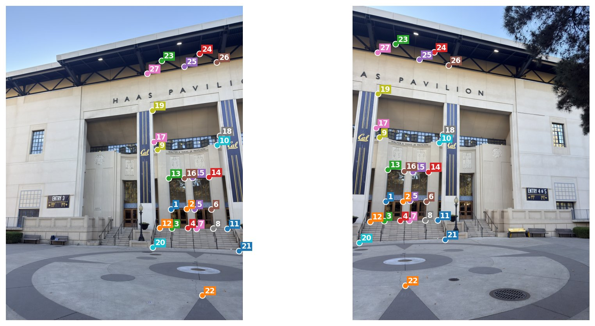
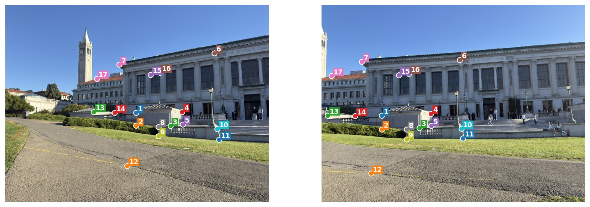
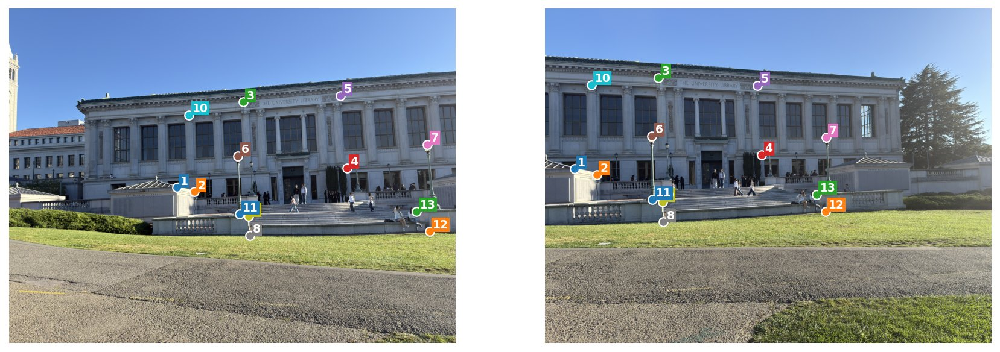
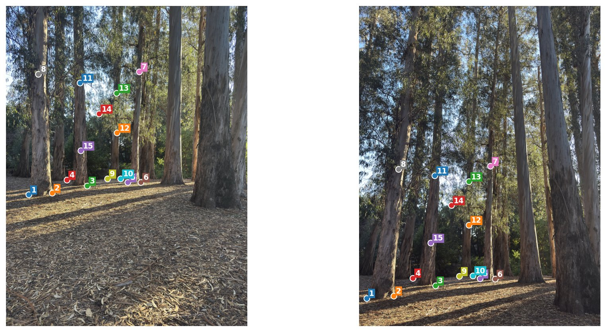
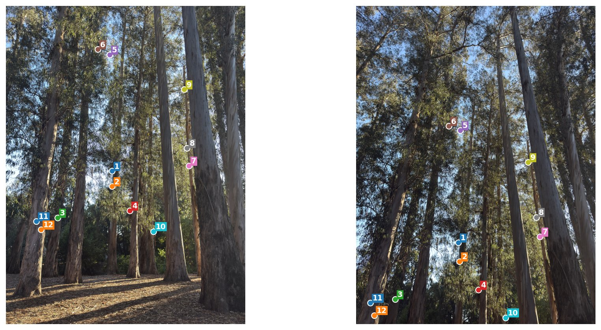
A.2 System of equations and recovered homography
Here are the actual numbers for Haas. The first point I clicked goes from about (835.73, 1034.60) in the left photo to (167.88, 995.00) in the right photo, and plugging it into the two equations gives the first two rows below. The next pair gives the next two rows, and so on. The H at the bottom maps the left photo into the right photo's view.
The 27 point pairs give 54 equations, so A has 54 rows and 8 columns and \(\mathbf{b}\) has 54 entries. The first four rows are shown as an example, with dots for the rest.
Recovered homography, using all matching pairs
The other pairs use the same equations with their own clicked points. Each H below maps the first photo of the pair into the second.
Doe Library, left to middle and middle to right
Eucalyptus grove, bottom to middle and middle to top
Warp the Images
A.3 Inverse warping
At the end of A.2, I have a matrix that tells me where points in one photo belong in another view, but that only gives me coordinates, so I still need to turn those coordinates into an image by finding a color for every pixel in the destination view. That step is called warping.
To give the warped photo enough room, I first transform its four corners through H and take the smallest and largest x and y values, which gives me the bounds of a rectangular output canvas. Those bounds can extend to negative coordinates, and keeping that extra space means I don't cut off parts of the photo just because they land outside the original frame.
Once I have that canvas, I need to fill it with colors, and although sending each original pixel forward through H sounds natural, stretching can spread those pixels apart and leave gaps. Instead, I visit each output pixel and use \(H^{-1}\) to find where it came from in the original photo, which is called inverse warping because I'm working backward from the image I want to make to the image I already have.
The source location might be something like (100.3, 80.7), which falls between stored pixels, so I need interpolation to estimate a color there. I wrote two versions from scratch, with warpImageNearestNeighbor rounding the location and copying the closest pixel's color, while warpImageBilinear takes a weighted average of the four surrounding pixels and gives more weight to the closer ones. Both follow the same inverse mapping, so the difference is how they read the color once they get there.
A.3 Rectification
Before trying to line up several photos, I tested the warp on a rectangle photographed at an angle, since mapping its four corners to an upright rectangle should straighten the lines on that surface and give me an easy way to see whether the mapping works. This is called rectification, and I tried it on the walkway and on a flat section of the Valley Life Sciences Building (VLSB).
The homography solver still needs two sets of points as in A.2, but this time the second set doesn't come from another photo. Instead, I match the four corners I clicked to four corners of a rectangle I define myself, keeping both lists in top-left, top-right, bottom-right, bottom-left order. In the destination points below, W sets the rectangle's width and r is its width-to-height ratio, so the height is W/r.
I use r = 0.25 for the long strip of walkway and r = 1.36 for the wall section, which are estimated proportions rather than measured dimensions and determine how wide or tall each surface looks. After solving for H from these corner pairs, I run the inverse warp with each interpolation method, and the results below show the brick rows from above and the wall with its window frames straightened.
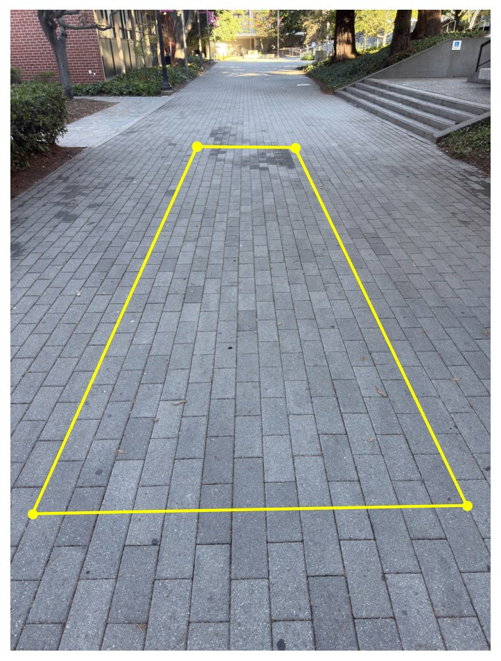
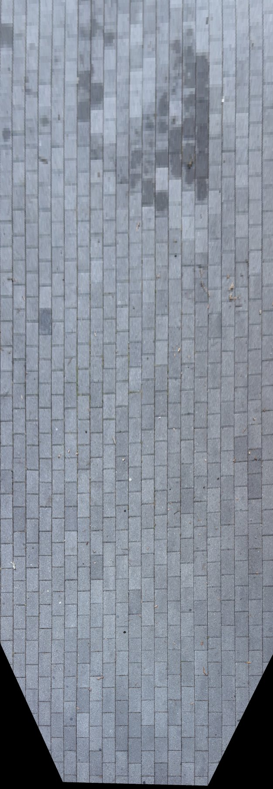
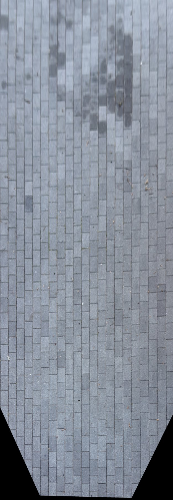
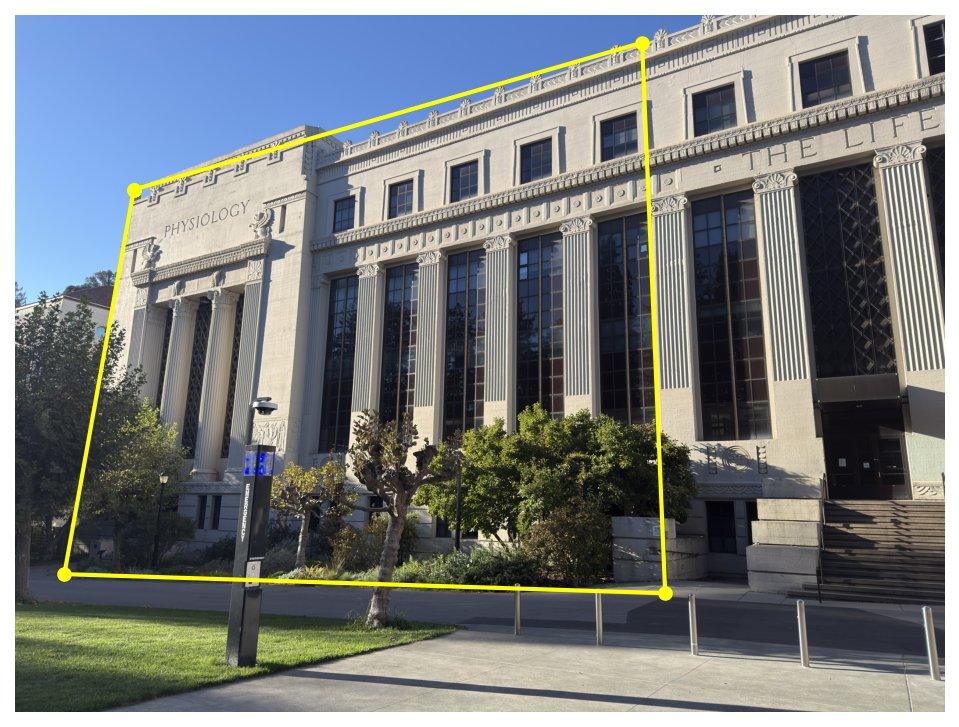
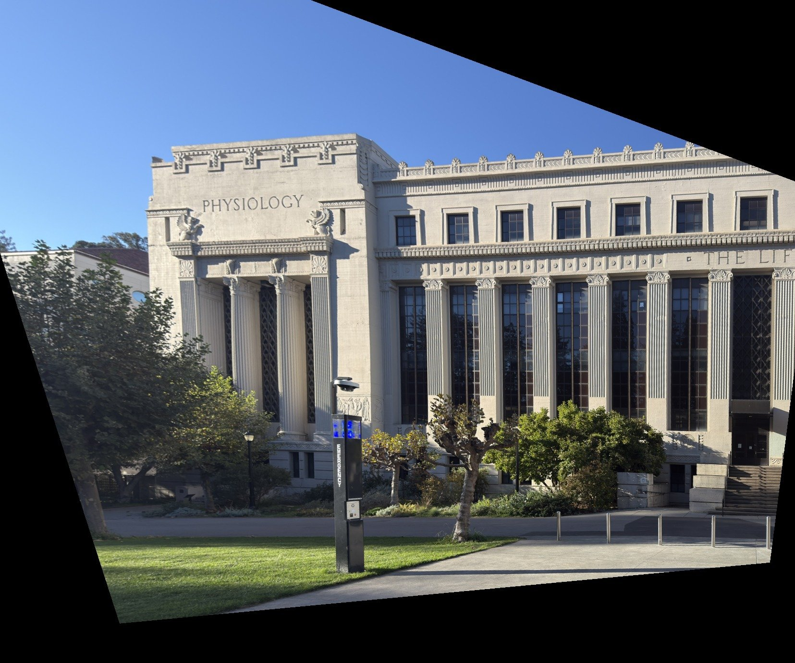
A.3 Nearest neighbor vs. bilinear
Both methods straighten the same lines, but the full images make their differences hard to see, so I cropped the same spot from each result to compare the detail. Nearest neighbor has blockier edges because its chosen source pixel changes in whole-pixel jumps, while bilinear mixes nearby colors and makes the brick lines and window frames smoother, though that mixing can soften fine detail.
The crop titles show the time for each full rectification, and bilinear took a little more than twice as long in these runs because it combines four colors instead of copying one. I used it for the mosaics because the smoother edges were worth that extra time.
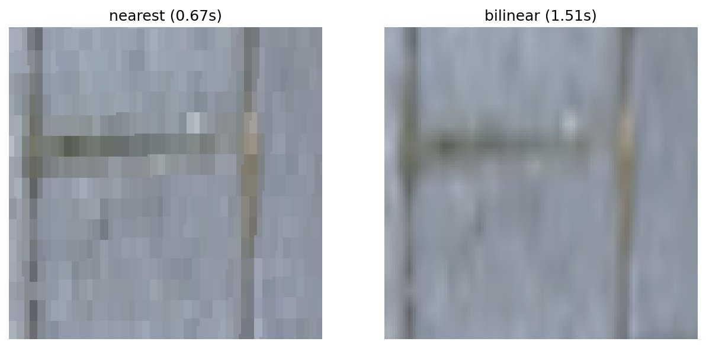
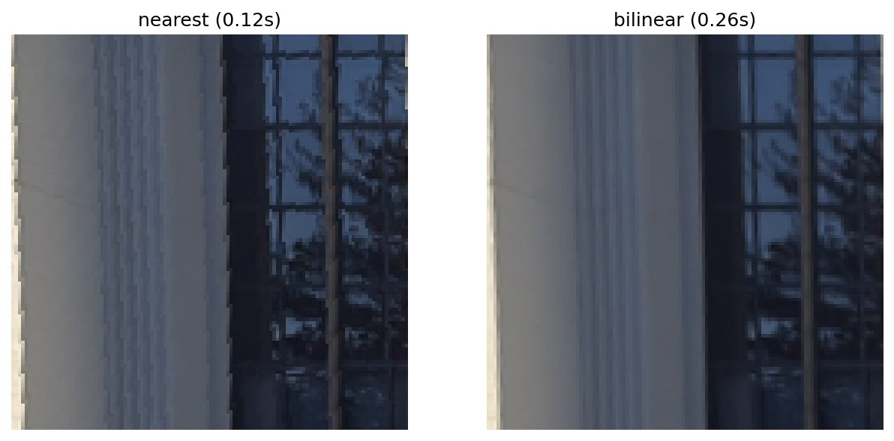
Blend the Images into a Mosaic
A.4 Procedure
With the warp tested, I can use it to bring the photos into one shared view, so a matching corner lands at the same canvas location regardless of which photo it came from. For Doe and the grove, I use the middle photo as the reference because it overlaps both neighbors, while for the two-photo Haas set I use the right photo.
To bring the other photos into that reference view, I have to pay attention to which way each H maps. For a three-photo set, \(H_{12}\) already takes the first photo into the middle, so I use it directly, while \(H_{23}\) goes from the middle to the third, so I invert it to bring the third back into the middle. The reference photo keeps its own coordinates, and for the grove the same process runs bottom to top rather than left to right.
Once those transforms are known, I can find the size of the whole mosaic by transforming every photo's corners into the reference view and taking the outermost bounds across them. I then inverse-warp each photo onto that same canvas, which gives me a stack of aligned images covering different parts of the scene, with enough space for the outer photos to extend beyond the reference photo's edges.
A.4 Reducing edge artifacts
Each warped photo covers part of the canvas, shown by its alpha mask. Where several photos cover the same pixel, I choose the one whose warped center is closest, which gives each photo a hard mask showing which pixels to take from it. Below are the middle Doe photo's coverage and hard mask, with white for 1 and black for 0, followed by the mosaic made by applying all three hard masks.
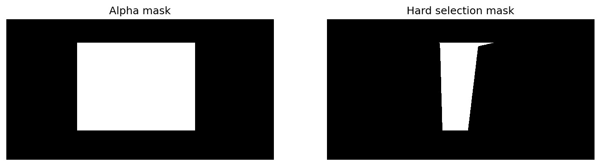
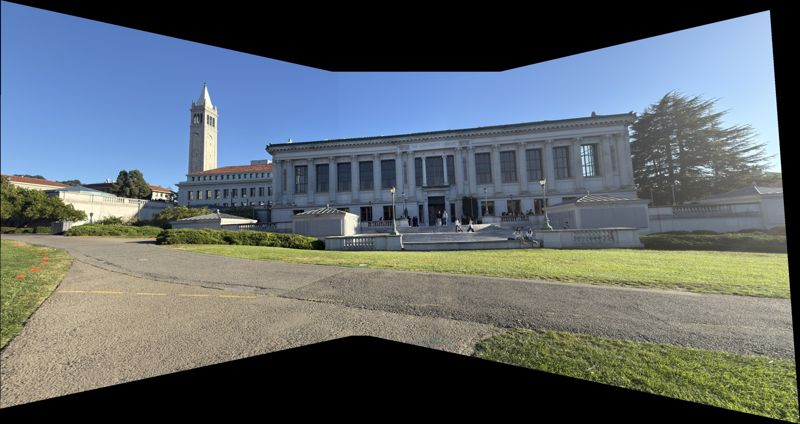
The hard masks put the photos together, but switching directly between them can leave brightness seams, so I use two-band blending from class to smooth the transitions. I get the blend weights in two steps.
- Apply a Gaussian blur to the hard selection masks to soften transitions between photos.
- Fade the weights toward zero near each warped photo's original alpha-mask border, where its valid pixels end, so the contribution fades out gradually instead of cutting off suddenly.
I use these weights to average the low-frequency colors. For pixel \(p\), the blend of two photos is given below, where L is a photo's low-frequency color and w is its soft weight. The same sum extends to three photos.
Where photos overlap, their low-frequency colors contribute according to these weights, and where only one photo covers the pixel, dividing by its weight leaves its color unchanged. I add back the high-frequency detail selected by the hard masks, so a pixel covered by only one photo keeps that photo's original color. Pixels with no coverage stay empty, and no colors are extended beyond a photo's boundary.
A.4 Mosaics
Here are the three mosaics after two-band blending.
Haas Pavilion
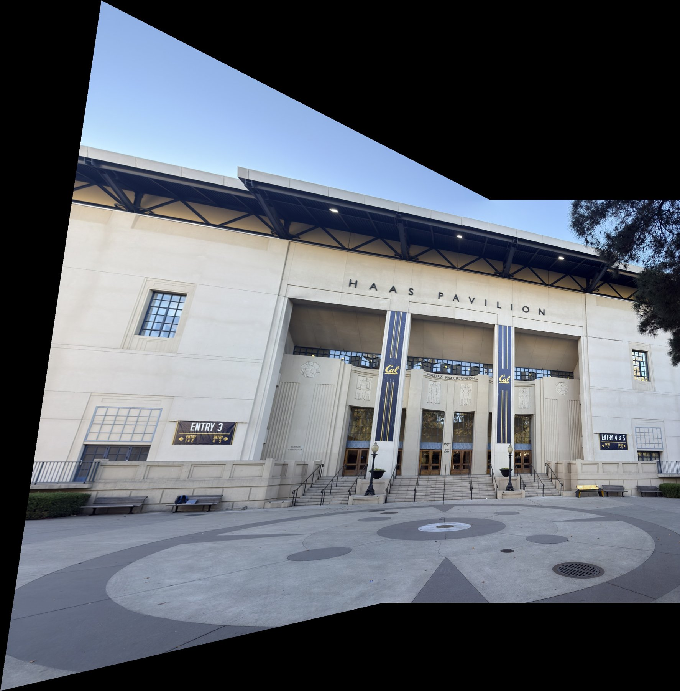
Doe Library
Eucalyptus grove
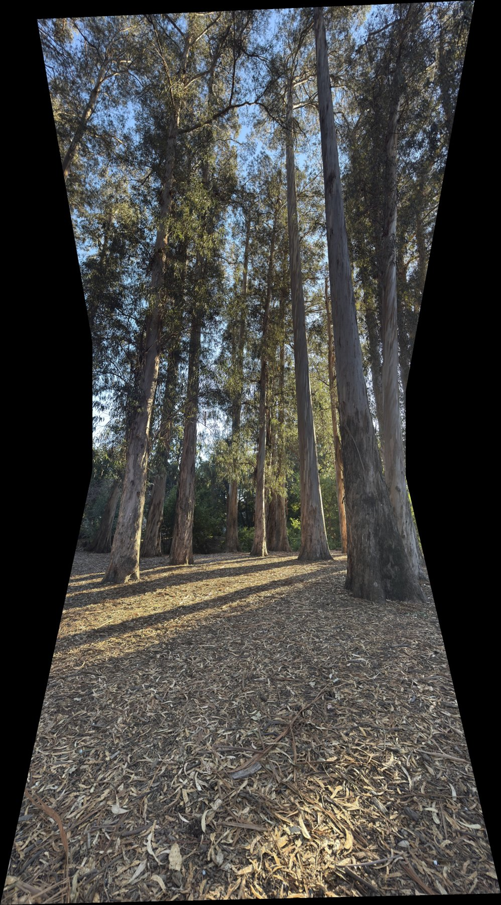